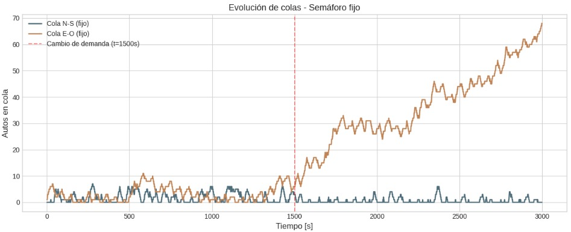
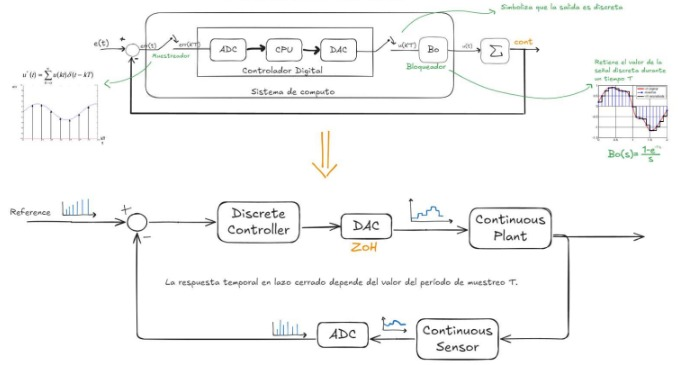

Tech stack
Bridging the gap between Industrial Automation (PLC) and Data Analytics. EU Citizen (Spain) based in Lugano, Switzerland. Open to relocation and willing to learn German or any other Language.
English (Fluent) | Spanish (Native) | Italian (A1 - Learning)
Tech stack
I am a pragmatic engineer focused on optimizing industrial processes through technology. My unique value lies in combining hardware control (PLC/Embedded) with data-driven insights.
+2 years specializing in Siemens PLCs (S7-300/1200/1500) via TIA Portal. Expertise in HMI/SCADA design and VFD Commissioning for production lines.
Google Data Analytics Certified. Skilled in extracting insights using Python (Pandas), SQL, and Tableau. Currently upskilling via the Mayerfeld Practicum Program.
Low-level programming for Cortex M0+ microcontrollers (C/C++), IoT sensor integration, and Control Theory application.
Intensive program simulating real-world business intelligence tasks, focusing on A/B testing and conversion rate optimization.
6-year program equivalent to M.Sc.
Final Project: Complete automation design for an R600 (Isobutane) gas unloading plant. The project involved safety interlocks, process control, and sensor selection for hazardous environments.
Comprehensive training covering the full data analysis lifecycle (Ask, Prepare, Process, Analyze, Share, Act). Practical application of SQL, R programming, and Tableau.
Development of complex control structures using Ladder Logic (LAD) for boolean operations and GRAFCET (SFC) for sequential process management.
Due to NDA restrictions, commercial automation projects cannot be displayed. Below is a selection of personal projects demonstrating my coding and analytical capabilities.


Windows Context Menu integration for instant Data Analysis. Generates statistical reports from any .CSV file with a single right-click.

Real-time desktop application monitoring user posture via webcam (MediaPipe). Alerts the user to prevent ergonomic injuries.

Automated investment tracking system leveraging Google Finance API and SQL queries for real-time asset performance monitoring.

Integration of ESP32/ESP8266 microcontrollers with Amazon Alexa for voice-activated home automation systems.

Comparative simulation of fixed-time vs. adaptive algorithms for traffic light optimization to reduce congestion metrics.

Full CRUD application with a graphical interface (Tkinter) for efficient product management and database interaction.

Implementation of RS-485 serial protocol using Direct Memory Access (DMA) on a Cortex M0+ (FRDM-KL46Z) for high-efficiency data transfer.

Collection of algorithms for discrete, time, and frequency domain analysis. Includes PID tuning and system stability modeling.
Real-time simulation of a First-Order Process. Adjust Kp, Ki, Kd to stabilize the system against disturbances.